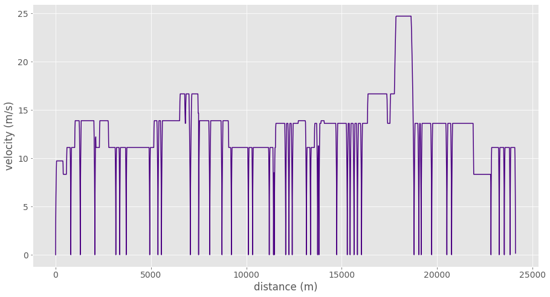

Drivecycle 0.1.0 Documentation¶
Drivecycle is a python package that simulates complex velocity-time profiles for public transit buses while taking into account stop and intersection locations along with speed limits. Drivecycle also simulates battery state of charge given bus (i.e. mass, battery type/capacity, etc.) and route (i.e. elevation change) characteristics.
Installation¶
To use Drivecycle, first install it using pip:
(.venv) $ pip install drivecycle
Usage¶
Plot Simple Tragectories¶
The trajectory function can be used to generate a trajectory given some contraints such as distance, acceleration and start/end/target velocities. This current release only models constant acceleration trajectories however other models may be added in future.
from drivecycle import route, trajectory, plots
traj = trajectory.const_accel(vi=5, v_target=12, vf=8, df=150)
plots.plot_vt(traj, "plot_vt.png")
Generate Drive Cycle¶
Trajectories are grouped together to form drive cycles of a given path. See sample drive cycle input path. The drivecycle function may include a stops parameter that constrains which nodes (i.e. street interseciton or bus stops) the vehicle must stop at and for how long.
# What nodes should we stop at and for how long (seconds)
stop={"bus_stop":30,"tertiary":10}
# Generate route drive cycle
route_drive_cycle = route.sequential(
edges,
stops=stop,
stop_at_node=True,
step=0.1
)
plots.plot_vt(route_drive_cycle, "plot_vt.png")
Sample Path Input¶
A path graph data structure is created using OpenStreetMap (OSM) taxonomy. intersection denotes the edge that intersects the end node and may be another OSM way or simply a bus stop. For example “intersection”:[“primary”] indicates a primary road intersecting the end node.
path = [
{
"way_id":1,
"speed":20,
"length":100,
"intersection":["primary"]
},
{
"way_id":2,
"speed":20,
"length":145,
"intersection":["primary"]
},
{
"speed":20,
"length":100,
"intersection":["bus_stop"]
},
{
"way_id":3,
"speed":50,
"length":150,
"intersection":["primary"]
},
{
"way_id":4,
"speed":50,
"length":100,
"intersection":["tertiary"]
},
{
"way_id":5,
"speed":20,
"length":100,
"intersection":["service","service"]
}
]
Generate Path Graph¶
Drive Cycle include utils that can used to generate graphs usting networkx. These are helpful to simplify path graphs to reduce redundant nodes and edges that may cause trajectories to fail. It can also be used to embed stops in a given path graph.
stops=[100,367] # linearly referenced stop locations along the route
route_graph = graph.Graph(edges) # create instance of Graph class
route_graph.include_stops(stops) # insert stop into the path graph
# Cluster stop locations in the filter list that are close together
route_graph.consolidate_intersections(
["tertiary", "secondary", "bus_stop"]
)
# Merge adjacent edges that have the same speed but do not merge
# stop locations in the filter list.
route_graph.simplify_graph(
["tertiary", "secondary", "bus_stop"]
)
route_graph.get_edges()
Generate Drivecycle using Valhalla Trace Attributes¶
Valhalla’s map matching API can be used to match a bus route geometry to OSM way ids. This can help us determine both road speeds and intersection locations along a route. Using the map matching Trace Attributes action, we can get a list of OSM edges the bus route travels along:
[{'end_node': {'type': 'street_intersection',
'elapsed_time': 0.698,
'intersecting_edges': [{'road_class': 'service_other',
'begin_heading': 204,
'to_edge_name_consistency': False,
'from_edge_name_consistency': False}]},
'length': 0.007,
'names': ['48 Avenue NW'],
'speed': 35,
'way_id': 463682703},
{'end_node': {'type': 'street_intersection',
'elapsed_time': 7.607,
'intersecting_edges': [{'road_class': 'residential',
'begin_heading': 131,
'to_edge_name_consistency': False,
'from_edge_name_consistency': False}]},
'length': 0.067,
'names': ['48 Avenue NW'],
'speed': 35,
'way_id': 463682703}
.
.
.
Using the drivecycle apis listed above we can then generate a simulation drivecycle of the entire route:
Electric Bus Battery Depth of Discharge¶
Using the drive we generated of the route, we can model the the battery depth of discharge of a battery electric bus using characteristics of the bus and batteries cells.
power = energy.battery_model(
dc, # drivecycle
m=15000, # mass in kg
regen_ratio=0.5, # regeneration ratio
num_cells=350, # number of battery cells
capacity=75, # Amp hour capacity
battery_type="LI-ION", # battery chemistry
)